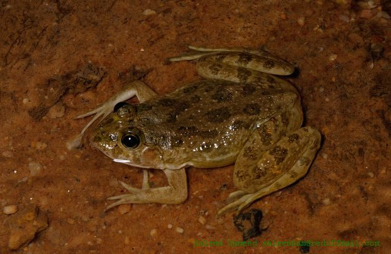

कूद मेंढकSkittering Frog
Euphlyctis cyanophlyctis · Dicroglossidae · AMP-0003

- Scientific name
- Euphlyctis cyanophlyctis (Schneider, 1799)
- Family
- Dicroglossidae
- Hindi
- कूद मेंढक / छप मेंढक / तैरने वाला मेंढक
- Status here
- native
- IUCN
- LC
When to look कब देखें
Season not recorded.
कूद मेंढक / Skittering Frog
Euphlyctis cyanophlyctis (Schneider, 1799) — Dicroglossidae
कूद मेंढक — या "छप मेंढक" — वह मेंढक है जो तालाब के किनारे बैठा हो और जैसे ही आप आएं, पानी में "छप!" करके कूद जाए। यह पूर्वी UP के तालाबों का सबसे आम मेंढक है। इसकी विशेषता: पानी की सतह पर "स्किटरिंग" — यानी दौड़ते हुए पानी के ऊपर कुछ दूर चलना, डूबे बिना। यह असाधारण क्षमता surface tension और शरीर के वज़न के संतुलन से होती है।
Quick Identification त्वरित पहचान
| Feature | Description |
|---|---|
| Size | 4–7 cm snout-vent length |
| Colour | Olive-green to brown with irregular darker spots; dark mid-dorsal line often present |
| Eyes | Protruding, positioned on top of the head to look above water while body is submerged |
| Skin | Smooth with small tubercles; not warty like toads |
| Hind legs | Long and powerful with fully webbed feet |
| Behaviour | Startled frogs skitter rapidly across the water surface before diving |
Morphology आकारिकी
Biometrics:
| Measurement | Range |
|---|---|
| Snout-vent length (SVL) | 40–70 mm |
| Weight | 15–35 g |
Body: Medium-sized, streamlined, with narrow pointed snout. Body less stocky than Bull Frog (AMP-0002) or Common Toad (AMP-0001).
Skin: Smooth to slightly granular. Variable colouration — olive-green, brown, or grey with irregular darker spots. A darker mid-dorsal stripe is often present. Some individuals have a pale green dorsal stripe.
Eyes: Positioned on top of the head (dorsal) — an adaptation for floating with most of the body submerged while keeping eyes above the waterline. Eyes protrude strongly. Horizontal pupil (rectangular).
Hind feet: Fully webbed — excellent swimmer. Webbing extends to the tips of toes. The strong hind legs provide the explosive power for both jumping and the skittering run.
Vocal sac: Males have a single subgular vocal sac — produces a "croak-croak" call during breeding.
आँखें छत पर: इस मेंढक की आँखें सिर के ऊपर हैं, बगल में नहीं। इसीलिए यह पानी में डूबकर भी देख सकता है — सिर्फ आँखें सतह के ऊपर, बाकी सब नीचे।
Ecological Role पारिस्थितिक भूमिका
Insectivore: Euphlyctis cyanophlyctis primarily eats:
- Insects (beetles, flies, mosquito larvae, ants)
- Small crustaceans
- Aquatic invertebrates
- Small fish fry (opportunistically)
Aquatic food web: The Skittering Frog is a central node in village pond food webs:
- Consumed by: Indian Pond Heron (BRD-0004), Common Kingfisher (BRD-0010), Rat Snake (REP-0002), Bengal Monitor (REP-0004), Mongoose (MAM-0002), Jungle Cat (MAM-0003)
- Consumes: insects, reducing mosquito larvae (public health benefit) and agricultural insect pests near ponds
Bioindicator: Frogs are highly sensitive to water pollution (particularly heavy metals, pesticides, nitrates). Their permeable skin absorbs chemicals directly. Disappearance of frogs from a pond is an early warning of water quality degradation. E. cyanophlyctis is abundant in clean ponds and absent from heavily polluted ones.
Tadpoles: Feed on algae, phytoplankton, and organic particles — performing a water-cleaning function by filtering phytoplankton from the water column.
पानी की गुणवत्ता का पहरेदार: जिस तालाब में मेंढक हों, पानी अपेक्षाकृत साफ है। मेंढक की त्वचा छन्नी की तरह काम करती है — रसायन सीधे शरीर में पहुँचते हैं। इसीलिए वे प्रदूषण का जल्दी संकेत देते हैं।
Life Cycle / Phenology जीवन चक्र
| Month | Event |
|---|---|
| Jun–Aug | Breeding — first monsoon rains trigger calling; mass spawning in ponds |
| Jun–Aug | Eggs laid in clumps (spawn masses) floating at water surface |
| Jul | Tadpoles hatch; free-swimming, filter-feeding |
| Aug–Sep | Tadpoles metamorphose into froglets (4–8 weeks) |
| Sep–Nov | Young frogs grow; disperse from breeding pond |
| Dec–Feb | Reduced activity in cold; shelter under vegetation or mud |
Amplexus: During breeding, males clasp females from behind (axillary amplexus). Females release 300–1500 eggs in a single spawn mass. In monsoon ponds, hundreds of frogs may breed simultaneously — a spectacular event, audible from 200+ metres.
Metamorphosis: The tadpole-to-frog transition takes 4–8 weeks under warm conditions. Tiny froglets (8–10 mm) emerge from the water onto pond banks — at this stage, predation by herons, snakes, and kingfishers is very high.
सामूहिक प्रजनन: पहली बारिश के बाद एक रात में सैकड़ों मेंढक एक तालाब में आ जाते हैं — आवाज़ें किलोमीटर दूर सुनाई देती हैं। यह मौसम का सबसे उत्साहित जैव-सांस्कृतिक क्षण है।
Agricultural / Human Relevance कृषि एवं मानव उपयोग
Mosquito control: Frog tadpoles and adults both consume mosquito larvae — contributing to natural mosquito population control in village ponds. Ponds with healthy frog populations consistently have lower mosquito breeding.
Pesticide threat: Organophosphate and pyrethroid pesticides used in paddy fields adjacent to ponds drain into water bodies and severely impact frog populations. Sub-lethal pesticide doses cause: limb malformations, reproductive failure, and immune suppression. This is well-documented for Indian frog species.
"पराली" burning impact: Burning paddy straw destroys hibernating frogs, frog eggs, and tadpoles in adjacent pond margins and irrigation ditches. The frog population in fields adjacent to regularly burned fields is measurably lower.
Field pest control: Frogs in paddy fields eat rice pests (small hoppers, beetles, flies) — estimated to save 20–40 kg pesticide equivalent per hectare per season in some studies (economic benefit rarely calculated).
मच्छर नियंत्रण: मेंढक के बच्चे (टैडपोल) मच्छर के लार्वा खाते हैं। स्वस्थ मेंढक-आबादी वाले तालाब में मच्छर कम होते हैं — यह प्राकृतिक कीट नियंत्रण है, बिना दवाई के।
Expected Locally स्थानीय रूप से अपेक्षित
Not a field record. Written from published accounts for eastern Uttar Pradesh. No confirmed local sighting yet — if you have seen it, that is what the atlas needs.
अभी तक स्थानीय पुष्टि नहीं। यह विवरण प्रकाशित स्रोतों से है, किसी अवलोकन से नहीं।
- Extremely common in all village ponds (talaabs) in Basti district — invariably present wherever water remains
- "Skittering" behaviour clearly observable — approach a pond quietly and watch frogs run on water surface
- Breeding chorus in June–July: loud, continuous croaking from all village ponds at night — one of the defining sounds of monsoon in eastern UP
- Noticeably absent from ponds near intensively farmed fields with high pesticide use
- Heron (BRD-0004) and Kingfisher (BRD-0010) observed hunting frogs at pond edges in the morning
मानसून की आवाज़: जून की पहली रात जब बारिश होती है — रात में तालाब से मेंढकों की आवाज़ें शुरू होती हैं। यह पूर्वांचल के गाँव में मानसून का सबसे पहला जीवंत संकेत है।
Distribution वितरण
Global range: Widespread across South and Southeast Asia, including Iran, Afghanistan, Pakistan, India, Nepal, Bangladesh, Sri Lanka, and Myanmar.
In India: Widespread throughout the plains and peninsular regions of India, extending from the base of the Himalayas up to about 1,800 m elevation.
In Uttar Pradesh: Abundant resident throughout all districts of Uttar Pradesh, commonly found in permanent and temporary freshwater wetlands.
In Basti district / eastern UP: Highly common resident throughout Basti district; abundant in village ponds, agricultural channels, roadside ditches, and marshy lowlands.
Range notes: No significant range changes documented.
Research Questions शोध प्रश्न
- Is the skittering behavior (running across water surface) an antipredator response, a thermoregulation strategy, or both — and how long can individual frogs sustain this?
- What is the frog density (frogs per 100 m of pond perimeter) in Basti district ponds — and does this correlate with pesticide use in adjacent fields?
- Can Skittering Frog population density be used as a rapid wetland health indicator during state biodiversity surveys?
- Do paddy-adjacent ponds show measurably lower frog diversity and density than non-agricultural ponds of similar size in eastern UP?
- Is the tadpole grazing on phytoplankton in village ponds measurable — and does it reduce algal bloom intensity?
Similar Species मिलती-जुलती प्रजातियाँ
| Species | How to distinguish |
|---|---|
| Hoplobatrachus tigerinus (Indian Bull Frog, AMP-0002) | Much larger (10–17 cm); yellow in breeding males; does not skitter on water surface |
| Duttaphrynus melanostictus (Common Toad, AMP-0001) | Heavily warty; slower; parotoid glands behind eyes; no skittering |
| Minervarya spp. (Cricket Frogs) | Smaller (2–3 cm); more pointed snout; sharp clicking call |
Taxonomy & Classification वर्गीकरण
Original description. Euphlyctis cyanophlyctis was originally described as Rana cyanophlyctis by Johann Gottlob Schneider in 1799 in his work Historiae Amphibiorum naturalis et literariae, Fasciculus primus (p. 137). Type locality: "East Indies" (Ostindien). The genus name Euphlyctis is derived from the Greek eu (well) and phlyktis (bubble or blister), referencing the inflated vocal sacs or smooth skin. The species name cyanophlyctis means "blue-blistered" or "blue-spotted" in Greek.
Subspecies. Monotypic — no subspecies are currently recognised.
Family and order placement. This species belongs to the order Anura and family Dicroglossidae (fork-tongued frogs). Dicroglossidae is a diverse family of frogs native to Africa and Asia. The genus Euphlyctis (skittering frogs) contains approximately 8 species distributed across South Asia, the Middle East, and parts of East Africa.
Phylogenetic notes. Revisions by Frost et al. (2006) split the classic genus Rana, placing the South Asian skittering frogs in the genus Euphlyctis. It is closely related to Euphlyctis hexadactylus (Six-toed Green Frog).
IUCN status rationale. Assessed as Least Concern (LC). The species is extremely common, highly adaptable to human-altered aquatic systems, and has a stable population with no significant threats.
Photo Gallery फ़ोटो गैलरी
No photos yet — photograph eye position on top of head, skittering action, breeding chorus at pond, tadpole close-up.
Atlas Connections संबंधित प्रजातियाँ
- BRD-0004 Indian Pond Heron — primary predator; hunts frogs at pond edges
- BRD-0010 Common Kingfisher — predator of froglets near water
- REP-0002 Indian Rat Snake — major frog predator; enters ponds to hunt
- REP-0004 Bengal Monitor — opportunistic frog predator at pond margins
- FLR-0013 Water Hyacinth — hyacinth-choked ponds reduce frog habitat
References सन्दर्भ
- Schneider, J.G. (1799). Historiae Amphibiorum naturalis et literariae. Fasciculus primus. Jena, p. 137. [original description]
- Dutta, S.K. & Manamendra-Arachchi, K. (1996). The Amphibian Fauna of South Asia. Wildlife Heritage Trust, Colombo.
- Frost, D.R. (2024). Amphibian Species of the World: an Online Reference. Version 6.2. American Museum of Natural History, New York.
- Daniel, J.C. (2002). The Book of Indian Reptiles and Amphibians. Bombay Natural History Society / Oxford University Press, Mumbai.
- Zoological Survey of India (2012). Fauna of Uttar Pradesh: State Fauna Series. Vol. 19. ZSI, Kolkata.
- IUCN Red List of Threatened Species — Euphlyctis cyanophlyctis.
- GBIF Occurrence Data — Euphlyctis cyanophlyctis, Uttar Pradesh (2010–2025).
Source file: species/fauna/amphibians/skipper_frog.md